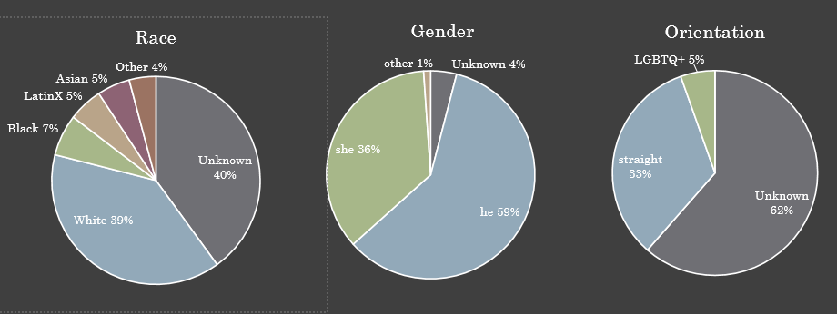
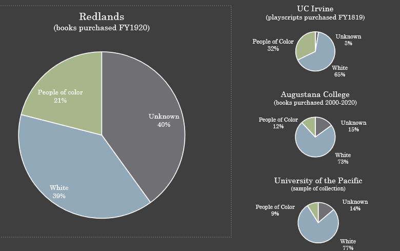
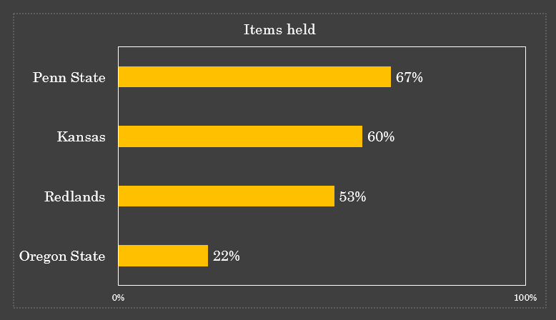

Measuring Electronic Resource Availability
Sanjeet Mann
University of Redlands
SCELC Research Day
March 5, 2013
Armacost Library infrastructure

- ILLIAD interlibrary loan system
- Full text targets (databases, ejournals): 79,757 unique titles
- Serials Solutions 360 Link
- A;ampI databases: 77,000 titles indexed
- Innovative Interfaces catalog/proxy: 263,575 book/serial titles
Why do electronic resource errors matter?
- Costs
- Frustrated expectations
- Undermined confidence
- Complicated instruction
Authors of books purchased FY1920

Compared to other demographic audits

Selected reading lists
How much of each reading list did we have?

Compared to other list audits

"Efforts to gain a social justice mindset and to understand issues of Diversity, Equity and Inclusion (DEI) take time, effort and resources. They must be nurtured and given attention."
Monroe-Gulick and Morris 2023, p. 18
Challenges
- Share findings with campus and colleagues PARTIALLY DONE
- Purchase missing titles MOSTLY DONE
- Adjust demand driven acquisition (DDA) parameters DONE
- Set goals for collecting titles by authors of color NOT DONE
"Cost saving strategies ... have largely favored vendor relationships over investing in collective effort among librarians and are part and parcel of a larger dynamic of business logic within higher education that privileges demand and immediate need over long-term support for scholarship and equity."
Jahnke, Tanaka and Palazzolo 2022, p. 179
References
- Alexander, Victoria Lynn. Anti-Racist Resource Guide, accessed February 23, 2023. https://www.antiracistguide.org/
- Benbow, Candice. Lemonade Syllabus, updated May 7, 2016. https://issuu.com/candicebenbow/docs/lemonade_syllabus_2016
- Blain, Keisha N. Charleston Syllabus, updated June 19, 2015. https://www.aaihs.org/resources/charlestonsyllabus/
- Chai, Tiffany, Lua Gregory, and Sanjeet Mann. 2021. “Evaluating Collection Diversity to Support Anti-Racist Teaching and Scholarship.” Virtual poster presented at 2021 ALA Conference, June 23-29, 2021.
- Emerson, Maria Evelia, and Lauryn Grace Lehman. 2022. “Who Are We Missing? Conducting a Diversity Audit in a Liberal Arts College Library.” Augustana Digital Commons.https://digitalcommons.augustana.edu/libscifaculty/15/
- ---. 2021. “Filling in the Gaps: A Diversity Audit Toolkit from Tredway Library.” Library and Information Science: Faculty Scholarship and Creative Works. https://digitalcommons.augustana.edu/libscifaculty/14/
- Feagin, Joe and Jessie Daniels. Bibliographies, accessed February 17, 2023, http://www.racismreview.com/blog/bibliographies/
- Gibney, Michele, Mickel Paris, and Veronica Wells. 2022. “A Diversity, Equity and Inclusion (DEI) Approach to Collection Development in a University Library.” Scholarly Commons. (Pre-print)http://scholarlycommons.pacific.edu/libraries-articles/121
- IBW21. Black Lives Matter Reading List, updated February 6, 2015, https://ibw21.org/news/black-lives-matter-reading-list/
- Jahnke, Lori M., Kyle Tanaka and Christopher Palazzo. “Ideology, Policy and Practice: Structural Barriers to Collections Diversity in Research and College Libraries.” College and Research Libraries 83(2): 166-183. https://doi.org/10.5860/crl.83.2.166
- Johnson, Peggy, Jenny Hille and Judith A. Reed. 2005. Fundamentals of Collection Development and Management, 3rd ed. Chicago: ALA Editions. ProQuest eBook Central.
- Monroe-Gulick, Amalia, and Sara E. Morris. 2022. “Diversity in Monographs: Selectors, Acquisitions, Publishers and Vendors.” KU ScholarWorks. (Author accepted manuscript) https://doi.org/10.1080/01462679.2022.2163019
- New York Public Library. Schomberg Center Black Liberation Reading List, created June 9, 2020, NYPL Blog, https://www.nypl.org/blog/2020/06/09/schomburg-center-black-liberation-reading-list
- ---. Schomberg Center Black Liberation Reading List for Young Readers, accessed February 17, 2023, https://www.nypl.org/books-more/recommendations/schomburg/kids
- Proctor, Julia. 2020. “Representation in the Collection: Assessing Coverage of LGBTQ Content in an Academic Library Collection.” Collection Management 45(3): 223-234. https://doi.org/10.1080/01462679.2019.1708835
- Stone, Scott. 2020. “Whose Play Scripts Are Being Published? A Diversity Audit of One Library’s Collection in Conversation with the Broader Play Publishing World.” Collection Management 45(4): 304-320. https://doi.org/10.1080/01462679.2020.1715314
- ZORA. The ZORA Canon: 100 Best Books by African American Women Authors, created January 13, 2020, https://zora.medium.com/100-best-books-by-black-women-authors-zora-canon-46b3492bdded